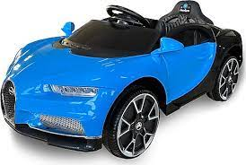

<!DOCTYPE html>
<html>
<head>
    <meta charset="utf-8" />
    <title></title>


</head>
<body>


    <meta charset="utf-8">
    <meta name="viewport" content="width=device-width, initial-scale=1">
    <link rel="stylesheet" href="http://maxcdn.bootstrapcdn.com/bootstrap/3.3.6/css/bootstrap.min.css">
    <script src="https://ajax.googleapis.com/ajax/libs/jquery/1.12.2/jquery.min.js"></script>
    <script src="http://maxcdn.bootstrapcdn.com/bootstrap/3.3.6/js/bootstrap.min.js"></script>
    <style>
        footer {
            background-color: #f2f2f2;
        }

        .carousel-inner img {
            width: 100%;
            min-height: 200px;
        }


        @media(max-width:600px) {
            .carousel-caption {
                display: none;
            }
        }
    </style>

</body>
</html>

<nav class="navbar navbar-inverse">
    <div class="container-fuild">
        <div class="navbar-header">


            <button type="button" class="navbar-toggle" data-toggle="collapse" data-target="#myNavbar">
                <span class="icon-bar"></span>
                <span class="icon-bar"></span>
                <span class="icon-bar"></span>
            </button>
            <a class="navbar-brand" href="#" BtDersleri.com></a>
        </div>
        <div class="collapse navbar-collapse" id="myNavbar">
            <ul class="nav navbar-nav">
                <li class="active"> <a href="#">Ana sayfa</a></li>
                <li><a href="#">Hakkında</a></li>
                <li><a href="#">galeri</a></li>
                <li><a href="#">ürünler</a></li>
            </ul>

            <ul class="nav navbar-nav navbar-right" >
                <li><a href="#"><span class="glyphicon  glyphicon-log-in">Giriş</span></a></li>

            </ul>
        </div>
    </div>
</nav>


<div class="container">
    <div class="row">
        <div class="col-sm-8">
            <div id="myCarousel" class="carousel-slide" data-ride="carousel">
                <!-- her slayt için bir işaret-->
                <ol class="carousel-indicators">
                    <li data-target="#myCarousel" data-slide-to="0" class="active"></li>
                    <li data-target="#myCarousel" data-slide-to="1"></li>
                    <li data-target="#myCarousel" data-slide-to="2"></li>
                </ol>

                <!--  slaytlar buraya gelecek-->
                <div class="carousel-inner" role="listbox">
                    <div class="item active">
                        
                        
                        <div class="carousel-caption">
                            <h3>başlık 1</h3>
                            <p>açıklama 1</p>
                        </div>
                    </div>

                    <div class="item">
                        
                        <div class="carousel-caption">
                            <h3>başlık 2</h3>
                            <p>açıklama 2</p>
                        </div>
                    </div>


                    <div class="item">
                        
                        <div class="carousel-caption">
                            <h3>başlık 3</h3>
                            <p>açıklama 3</p>
                        </div>
                    </div>
                </div>
        </div>
    </div> 
  </div>
</div>


